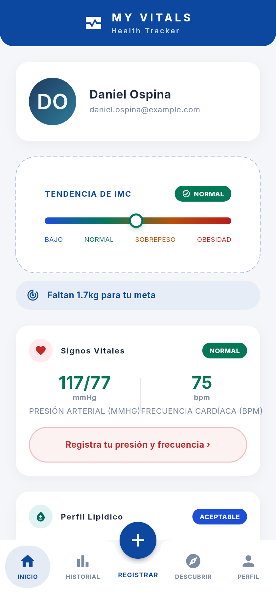
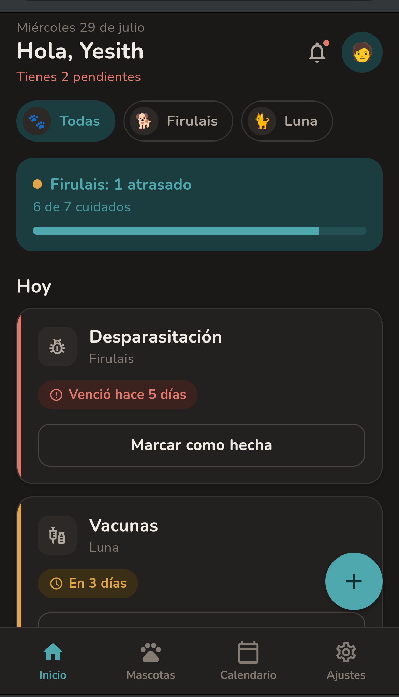
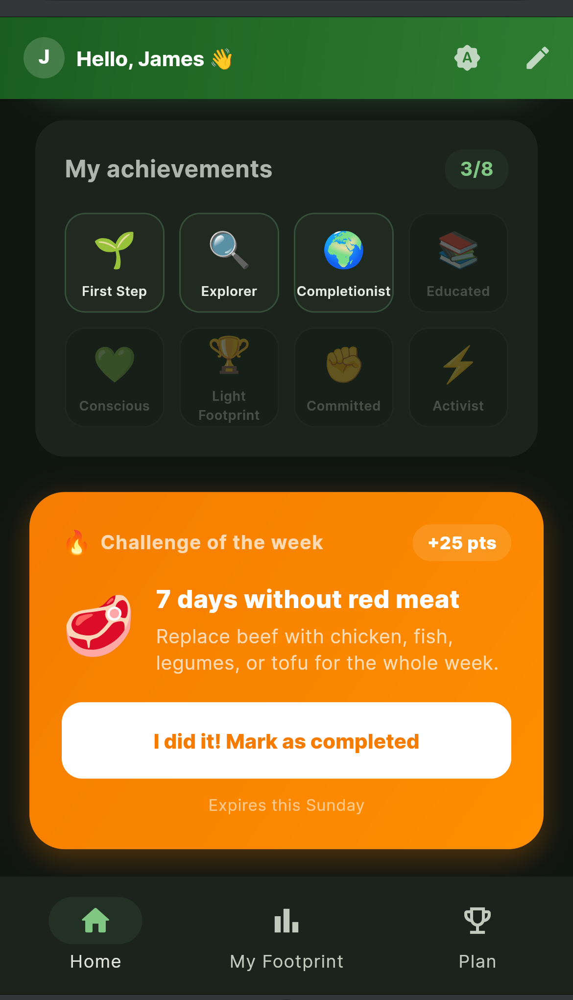
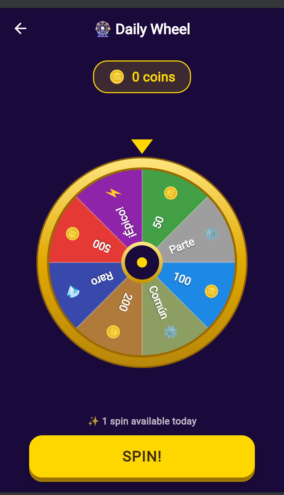

Iron-Coding diseña y construye aplicaciones impulsadas por IA — precisas, prácticas y hechas para durar.
ver_proyectos()
Seguimiento integral de indicadores de salud con analítica impulsada por IA. El producto más completo de Iron-Coding, diseñado para acompañar decisiones de bienestar todos los días.

Aplicación móvil construida sobre la misma base técnica: interfaz directa, datos claros y una experiencia pensada para el uso diario.

Cálculo y seguimiento de huella de carbono personal, para convertir hábitos cotidianos en datos que se pueden medir y mejorar.

Entrenamiento y competencia con seguimiento de progreso, pensada para sostener la constancia con métricas simples.
if (tu_idea.necesita("IA", "precision")) { contactar(); }contactar()